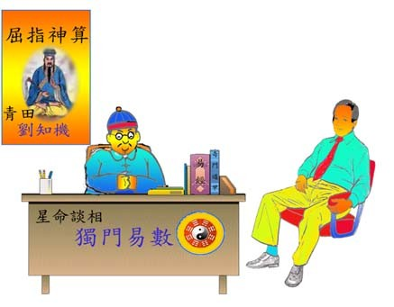

相 命 家
夏丏尊 著
我因事至南京，住在xx飯店。二樓樓梯旁某號房間裡，寓着一位命相家，房門照例關着的。這位命相家叫甚麼名字，房門上掛着的那塊玻璃框子的招牌上寫着甚麼，我雖在出去回來的時候，必須經過那門前，卻未曾加以注意。
有一天傍晚，我從外邊回來，剛走完樓梯，見有一個着洋服的青年方從命相家房中走出，房門半開，命相家立在門內點頭相送，叫「再會！」
那聲音很耳熟，急忙把腳立住了看那命相家，不料就是十年前的同事劉子岐。
「呀！子歧！」我不禁叫了出來。
「呀！久違了。你也住在這裡嗎？」他吃了一驚。把門開大了讓我通去。我重新去看門口的招牌，見上面寫看「青田劉知機星命談相」等等的文字。
「哦！劉子岐一變而為劉知機。十年不見，不料得了道了，究竟是怎麼一回事？」我急忙問。
「說來話長，要吃飯，沒有法子。你仍在寫東西嗎？教師也好久不做了吧。真難得，會在這裡碰到。不瞞你說，我吃這碗飯已有七八年了。自從那年和你一同離開xx中學以後，飄泊了好幾處地方，這裡一學期，那裡一學期，不得安定，也曾掛了斜皮帶革過命，可是終於生活不過去，你知道，我原是一隻三腳貓，以後就以賣卜混飯了。最初在上海掛牌，住了四、五年，前年才到南京來。」
「在上海住過四、五年，為甚麼我一向不曾碰到你？上海的朋友之中也沒有人談及呢？」我問。
「我改了名字，大家當然無從知道了。朋友們又是一向都不信命相的，我吃了這口江湖飯，也無顏去找他們。如果今天你不碰巧看到我。你會知道劉知機就是我嗎？」
我有許多事情想問，不知從何說起？忽然門開了，進來的是二位顧客。一個是戴呢帽穿長袍的，一個是着中山裝的。年紀都未滿三十歲。劉子岐--劉知機丟開了我，滿面春風地立起身來迎上前去，儼然是十足的江湖派，我不便再坐，就把房間號數告訴了他，約他暢談。回到了自己的房間裡。
十年前的中學教師，居然會賣卜！顧客居然不少，而且大都是青年知識階級中人。感慨與疑問亂雲似地在我胸中紛紛壘起。等了許久，劉知機老是不來，叫茶房去問，回說房中尚有好幾個顧客，空了就來。
「對不起，一直到此刻才空。」劉知機來已是黃昏時候了。「難得碰面，大家出去敘敘。」
在秦淮河畔某酒家中覓了一個僻靜的座位，多大家把酒暢談。

圖：教師劉子岐一變而為青田劉知機命相師，顧客門庭若市，多為年輕的政府官員，或學生。